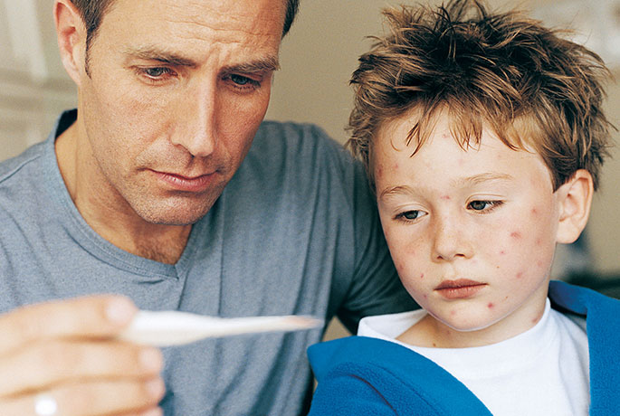
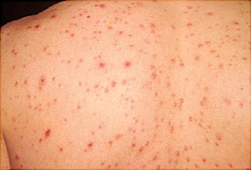
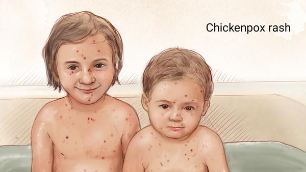
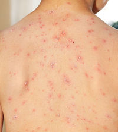
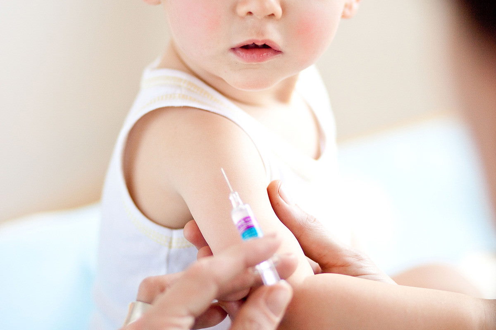
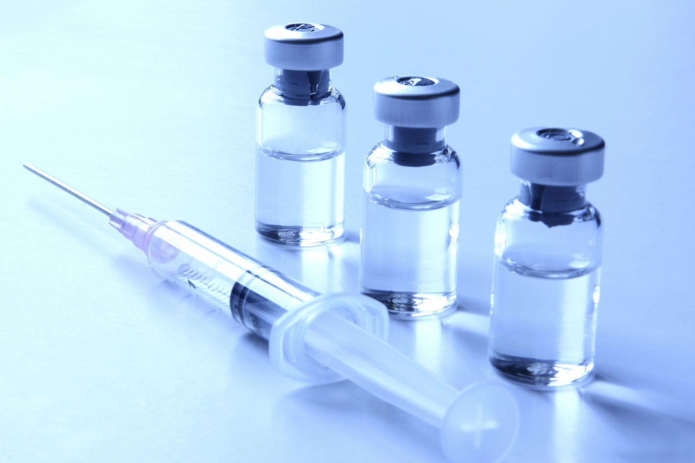

Chickenpox is a highly contagious disease caused by the varicella zoster virus. It can cause itching, tiredness, and a fever, but the hallmark of the disease is its fluid-filled, blister-like rash. The rash usually shows up on your stomach, back, and face, and then can spread to your entire body. According to the CDC, chickenpox can cause between 250 to 500 itchy blisters that dry up and form scabs in four or five days, and it can be especially serious in babies, adults, and people with weakened immune systems.
 The rash of chickenpox develops in groups with raised red spots arriving first, progressing to blisters filled with clear fluid, like a drop of water on red skin. The blisters may be dimpled in the center. They may break and reform, then finally form sores before drying up as scabs or crusts.
 The best way to prevent chickenpox is to get the chickenpox vaccine. Children, adolescents, and adults should get two doses of chickenpox vaccine. Chickenpox vaccine is very safe and effective at preventing the disease. Most people who get the vaccine will not get chickenpox. If a vaccinated person does get chickenpox, it is usually mild—with fewer red spots or blisters and mild or no fever. The chickenpox vaccine prevents almost all cases of severe disease.
 